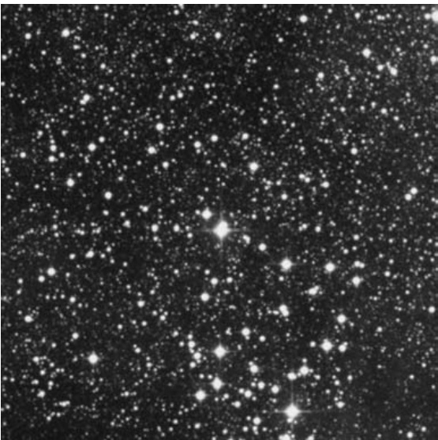

蛾翼星团 · Moth Wing Cluster (NGC 6281)

The tail of Scorpius, the scorpion, is projected against the hub of our galaxy, a region littered with open clusters and asterisms. Some might argue that once you move beyond the Messier and Caldwell catalogs, open clusters are all the same – little puffs of concentrated starlight. But one, NGC 6281, stands out from the multitude as a fine target for small telescopes. In fact, at magnitude 5.4, NGC 6281 is the brightest non-Messier/non-Caldwell open cluster in Scorpius, though one hardly hears about it.
天蝎座的尾部投影在我们银河系的中心区域，这片天区散布着众多疏散星团和星群。或许有人认为一旦超越梅西耶和科德韦尔星表，疏散星团便千篇一律——不过是些浓缩星光的微小光斑。但其中NGC 6281脱颖而出，成为小型望远镜的绝佳观测目标。事实上，这个5.4等的星团是天蝎座中最明亮的非梅西耶/非科德韦尔疏散星团，却鲜少被人提及。
Historical Discovery 历史发现
On June 5, 1826, James Dunlop swept up the cluster with a 9-inch reflector in New South Wales. He listed it as the 556th object in his 1827 catalog, calling it "[a] curiously curved line of pretty bright [faint] stars, with many very [faint] stars mixt."
1826年6月5日，詹姆斯·邓洛普在新南威尔士州用一台9英寸反射望远镜观测到这个星团。他在1827年编录中将其列为第556号天体，描述为"由相当明亮[微弱]恒星组成的奇异曲线，混杂着许多极其[暗淡]的恒星"。
John Herschel later observed the cluster and offered his characteristic assessment: "A pretty rich, large, pretty bright, cluster VII class, of loose stars ranging from magnitude 9 to 11, which fills ⅔ of the field."
约翰·赫歇尔后来补充道："一个相当丰富、庞大且明亮的VII级疏散星团，成员星等介于9至11等，占据视场⅔区域。"
The NGC description succinctly records: "Cluster, large, pretty rich, little compressed, stars from magnitude 9 to 11."
NGC总表则简洁记载："星团，大型，较丰富，略密集，恒星亮度介于9至11等之间。"
Physical Characteristics 物理特征
NGC 6281 is a medium-age galactic star cluster with an estimated age of 220 million years, roughly the same age as the famous M7 in Scorpius. However, NGC 6281 is both smaller and dimmer than M7 in apparent size. The cluster lies at a distance of approximately 1,800 light-years, which is more than twice the distance of M7. More remarkably, NGC 6281 spans only 4.2 light-years in true physical extent, making it the smallest galactic star cluster in the Messier, Caldwell, or Hidden Treasure catalogs.
NGC 6281是一个中等年龄的银河星团，估计年龄约2.2亿年，与天蝎座著名的M7大致同龄。然而，NGC 6281在视大小上既比M7小又比它暗淡。该星团距离我们约1,800光年，是M7距离的两倍多。值得注意的是，NGC 6281的实际空间跨度仅4.2光年，是梅西耶、科德韦尔或隐藏宝藏星表中物理尺寸最小的银河星团。
The cluster contains approximately 70 stars down to 13th magnitude, with the brightest shining at magnitude 9.0. Interestingly, the nearby 6th-magnitude star HD 153919 was once thought to be physically associated with NGC 6281, but this no longer appears to be the case. Current research suggests HD 153919 may be a runaway star from NGC 6231 (Caldwell 76), whose age is between 3.8 and 6.5 million years – far younger than NGC 6281.
该星团包含约70颗视星等达13等的恒星，其中最亮星等为9.0等。有趣的是，附近的6等星HD 153919曾被认为与NGC 6281存在物理关联，但最新研究表明这一假设并不成立。目前的研究表明HD 153919可能是NGC 6231（科德韦尔76，年龄380-650万年）的逃逸星——远比NGC 6281年轻得多。
Essential Parameters 关键参数
| Parameter 参数 | Value 数值 |
|---|---|
| Right Ascension 赤经 | 17h 04.8m |
| Declination 赤纬 | −37° 53′ |
| Magnitude 星等 | 5.8 (O'Meara); 5.4 |
| Angular Size 视直径 | 8.0′ |
| Distance 距离 | 1,800 light-years 光年 |
| Age 年龄 | 220 million years 2.2亿年 |
| Physical Size 实际直径 | 4.2 light-years 光年 |
| Cluster Type 星团类型 | Open Cluster 疏散星团 |
| Constellation 星座 | Scorpius 天蝎座 |
| Discoverer 发现者 | James Dunlop (1826) |
Observing Experience 观测体验
Although bright, NGC 6281 is also neglected, mainly because the cluster is near a host of other popular objects. It lies 4½° north-northeast of NGC 6231 (Caldwell 76), 2° southwest of the Bug Nebula (Caldwell 69), 10° southwest of M7, and 8° northeast of NGC 6124 (Caldwell 75). At least NGC 6281 is conveniently located – it simply lies 2½° almost due east of Mu Scorpii, about one-third of the way toward the paired Stinger stars at the end of the Scorpion's tail.
尽管明亮，NGC 6281却常被忽视，主要因为这个星团周围环绕着众多更知名的天体。它位于NGC 6231（科德韦尔76）东北偏北4½°处、虫状星云（科德韦尔69）西南2°、M7西南10°、NGC 6124（科德韦尔75）东北8°。不过NGC 6281的位置相当便利——从天蝎座尾部的螫针双星向Mu天蝎座方向延伸约三分之一距离处，几乎正东2½°即可找到。
In the antique telescope, NGC 6281 is a beautiful object, appearing as a rosette of sparkling suns. Through the 4-inch, NGC 6281 is best seen at 23×, when its stars form a marvelous dipper of bright suns superimposed on a fog of Milky Way. The cluster's brightest star is a nice double star with a 9th-magnitude primary and a 10.8-magnitude companion; this double is the second star in the dipper's handle, which is comprised – it "a pretty cluster" for 60-mm telescopes.
在这架古董望远镜中，NGC 6281呈现为一片由闪耀恒星构成的玫瑰状星团。通过4英寸口径望远镜以23倍率观测时最为壮观——其成员星在银河系雾霭背景上勾勒出一个璀璨的北斗状结构。该星团最亮恒星是一组优美的双星系统，主星9等，伴星10.8等；这对双星位于"北斗"柄部的第二颗星
🔒 受限于篇幅，本文仅展示部分样章。O'Meara 先生完整的观测手记、实测数据及未公开的独家配图，请参阅原著双语典藏版。
👉 立即在闲鱼获取《DEEP-SKY COMPANIONS》中英双语高清典藏版